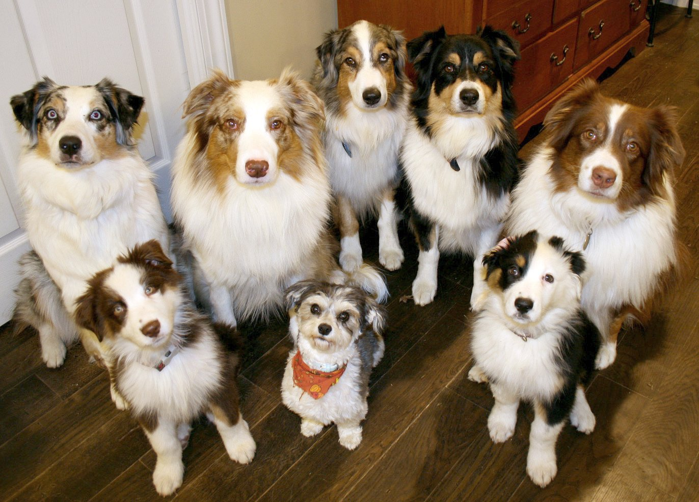

About Us
Dogs for dog food is a food recovery site that allows individuals or organizations to donate surplus goods. This food is then matched to local community pet organizations. To date, dogs for dog food has rescued over 1000 pounds of dog food that would have gone unused. If you are an organization looking to donate, or an organization looking for a food donation, please contact dogs4dogfood@gmail.com.
